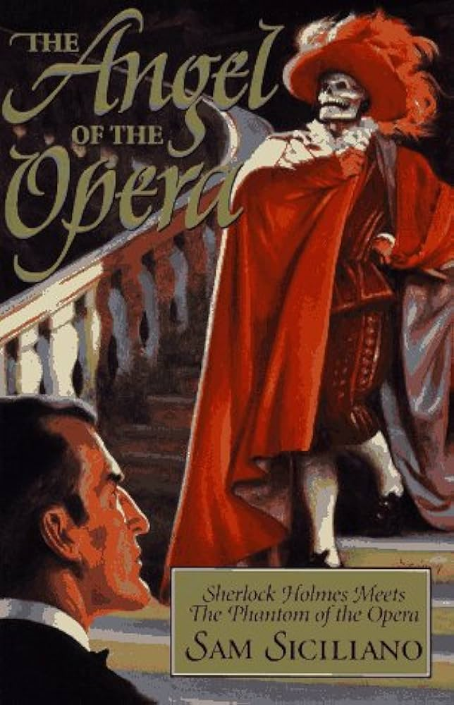
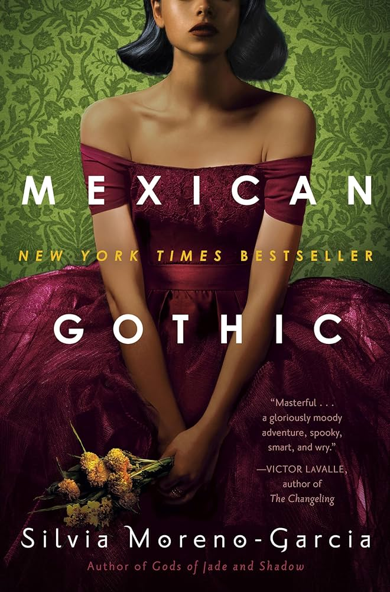
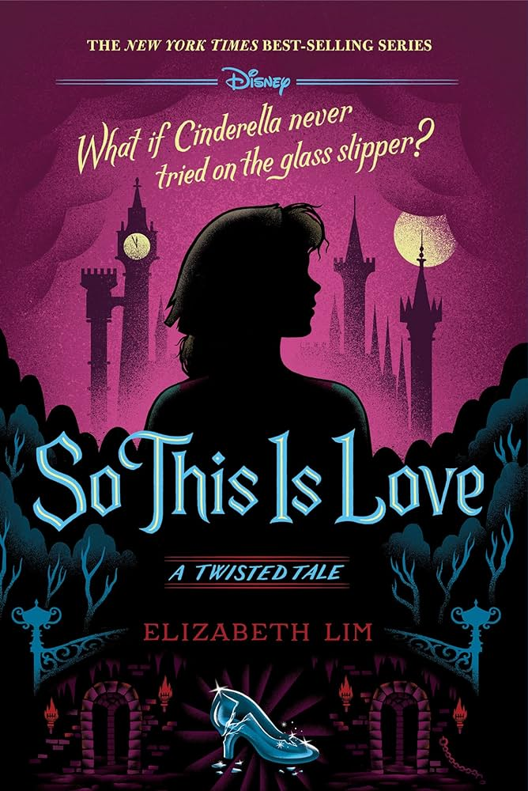

Assignment 4.2: Build a Web Page Exercise - Part 4
The Angel of the Opera

Author: Sam Siciliano
Mexican Gothic

Author: Silvia Moreno-Garcia
So This Is Love

Author: Elizabeth Lim
Back to Landing Page